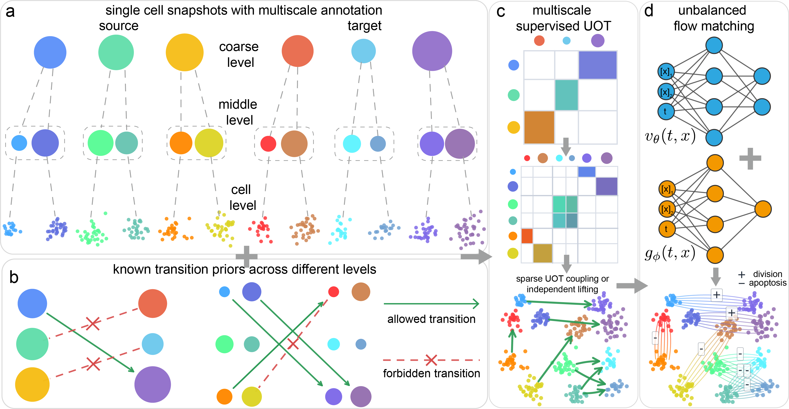

Quantitative Biology, Galgame, RPGmaker
Welcome! I am Lezhi Chen (陈乐知), an incoming Ph.D. student at the Center for Interdisciplinary Studies (CIS), Westlake University.
I am working on developing scalable computational methods (based on deep learning), while incorporating the wisdom of statistical physics and applied mathematics, to gain a deeper understanding of living systems. Specifically, I focus on the following topics:
theory and computation of cellular dynamics: I am dedicated to reconstructing cellular dynamics from a hybrid modeling perspective, with the goal of extracting effective variables underlying embryonic development and perturbation response.
agentic AI for closed-loop validation: I am also dedicated to developing AI agents that turn computational insights into testable hypotheses, integrating with autonomous experimental platforms, to uncover the order parameters governing biological processes.
2027.09 - Present: Ph.D. Candidate, Westlake University (advisor: Prof. Zuwan Lin)
2023.09 - 2027.06: B.Eng., Sichuan University
2026.01 - Present: Research Intern, Center for Machine Learning Research, Peking University (mentor: Prof. Peijie Zhou)

Multiscale Supervised Unbalanced Optimal Transport Flow Matching
Qiangwei Peng*, Lezhi Chen*, Peijie Zhou.
NeurIPS 2026
Paper
•
Code